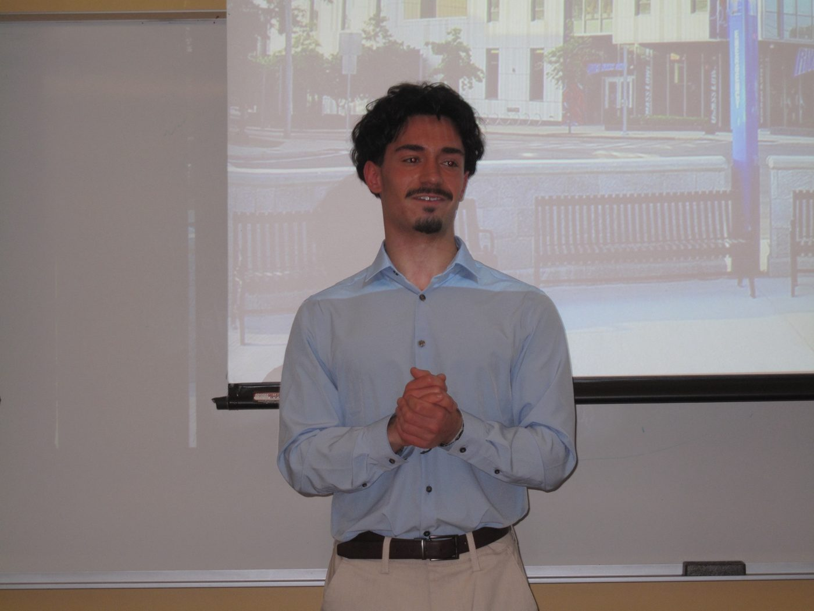
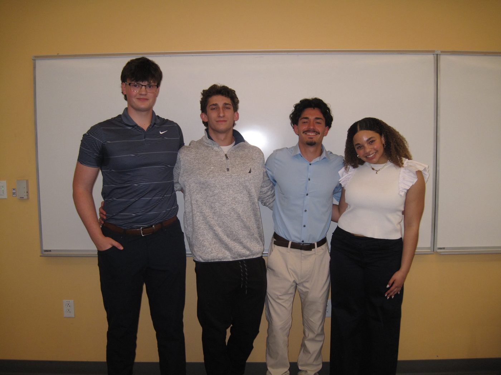

Project
Mill City Consulting.
A six lane duckpin bowling alley that has been open since 1931, with new owners and no financial system.
The client
Leagues, parties, and 1960s pinsetters
Two owners had just bought the place. Leagues were about 87 percent of revenue, parties 9, food and drink 4. Strengths: one of the last duckpin houses in the region, owners who do their own repairs, a real Facebook following. Weaknesses: fragile sixty year old machines, no website, no formal books.
What we built
Visibility first
- An Excel financial tracker with a live profit and loss, so the owners could see the business for the first time.
- A QR code payment setup, a website, new signage and a brand story.
- An intro to the UML engineering department about the pinsetters.
What I owned
The question bank
My part was research and due diligence. I wrote the five section client question bank the group uses on new engagements: understanding the business, current operations, customers and market, pain points, and goals. I presented it to the next Mill City cohort in September 2026.
Photos
Presenting the work

Presenting the research and due diligence template. 
The team after the presentation.